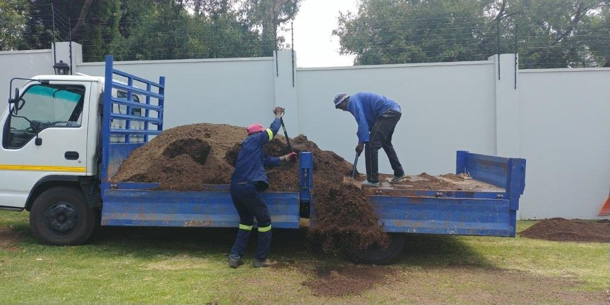
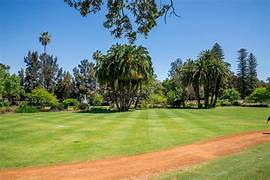
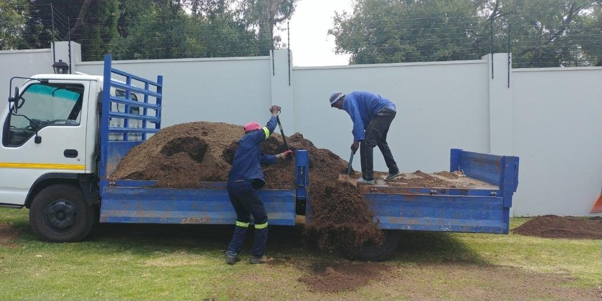
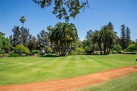

About GLS
Greenliving Services (Pty) Ltd is a private company founded by Boipelo Martin in March 2012 with 14 years of industry-specific experience in working on tendered projects with municipalities, international investors, subcontracting, and private individuals. Our offices are situated in Monavoni in centurion, Gauteng. At Greenliving Services (Pty) Ltd, we pride ourselves in only using the highest quality plants, materials, and equipment to ensure that all our services are of the highest standard, making the gardens we install and maintain delightfully inviting all year around. We have experience with all types of gardens and understand that each landscape requires a different maintenance and watering regime. We offer our services to various Residential, Commercial & Industrial Security Complexes/Estates; also including Retail Centers, Recreational Facilities, Lodges, and Municipal Grounds as well as Academic Institutions. We provide the above services to corporate as well as residential clients, Residential Gardens (new designs, installations, and irrigation systems only). Most importantly, we understand that a garden means different things to different people and serves different purposes. As a result, Greenliving Services (Pty) Ltd works with clients to create unique turnkey solutions, garden designs, and outdoor living spaces; tailored to their specific needs.
 


